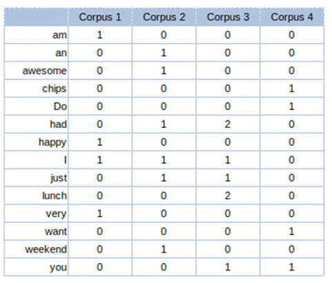
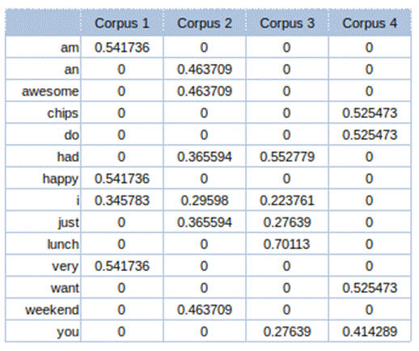
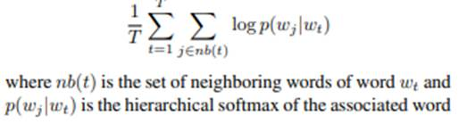
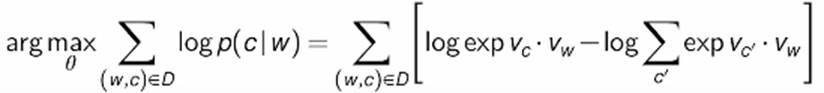

10.4: Feature Extraction
In the case of text
classification, feature extraction is done by representing text documents into matrices,
which can then be used by machine learning algorithms as features to classify
labels. For traditional machine learning models, feature extraction is done
mostly by either a bag of words matrix or the TF-IDF matrix.
10.4.1 Bag of
Words
It is a scoring method in which the
count of individual words is used for presence and 0 for absence. Let us
consider example 10.4.1 below with 4 corpora.
Example 10.4.1
Corpus 1: I am very happy.
Corpus 2: I just had an awesome
weekend.
Corpus 3: I just had lunch. You had
lunch?
Corpus 4: Do you want chips?
Unique words from these 4 corpora,
after removing punctuation marks are: 'am', 'an', 'awesome', 'chips', 'Do',
'had', 'happy', 'I', 'just', 'lunch', 'very', 'want', 'weekend', 'you'
Bag of words vector will appear in
table 10.4.1.

Table 10.4.1: Bag of words vector
In the above table, the corpus is
present in the column and the words are present in the row. If a specific word
is present in the corpus, its count is presented in corresponding cells against
the word. If a word is not present in the corpus, 0 is presented in the
corresponding cell.
For example, the word lunch is
present in corpus 3. Hence
count 2 is present in the corresponding cell. The word am is only present in corpus 1, for once. Hence the corresponding
cells have the value 1. Again, the word am ,
is not present in any other corpus apart from corpus 1. Hence, in corpus 2, 3,
and 4, the value in the corresponding cells is 0.
10.4.2 Term
Frequency
Inverse Document Frequency
This is otherwise abbreviated as
TF-IDF. Term frequency and inverse document frequency of each word are
calculated and multiplied to obtain the TF-IDF score.
Term frequency (TF) is calculated by
dividing how frequently a term appears in a corpus, by the total number of terms
in the corpus.
TF = Count of the number of times
the term t is present in the corpus) / Count all the terms in the corpus.
Inverse document frequency is
calculated by taking the logarithm of the total number of the corpus by the
count of documents that has the term.
IDF = log (Total number of documents
/ Count(documents which have term t ))
TF-IDF vector for the corpora in
example 10.4.1 will appear as per table 10.4.2

Table 10.4.2: TF-IDF vector
10.4.3
Word2vec
Word2Vec is a shallow neural network
that tries to understand the context of words [10]. In word2vec,
individual words are represented as one-hot vectors and are used for creating a
vector space. It has a hidden layer, which is a fully-connected dense layer.
The weights of the hidden layer are the word embeddings. The output layer
outputs probabilities based on the Softmax activation function for the target
words from the vocabulary. Such a network is a "standard" multinomial
(multi-class) classifier.
The objective function of word2vec
is to maximize the log of similarity between the vectors for words that appear
close together in the context and minimize the similarity of words that do not.
This is called the Softmax function.

Since classes are actual words, the
number of neurons is huge. The Softmax function when applied to such a huge
output layer will be computationally expensive. To save costly computation of
the Softmax in the output layer, noise-contrastive estimation is used. This
converts the multinomial classification problem to a binary classification
problem.

C is the context word, and W is the
focus word. Vc
is the embedding of context words and Vw
is the embedding of focus words.
Given a pair of words, we will
predict the context target or not. For this, we will create positive and
negative samples. For example, if 'Orange' and 'juice' are positive, it will be
inferred that these appear together in the same context. Similarly, if
'Orange', and 'king' are negative, it will be inferred that both words do not
appear in the same context. Positive samples are extracted from the context
window whereas negative sample is drawn randomly from the dictionary of all
words. Depending on the size of the data, if the data is small, negative sample
size k is selected between 5<>20 and for large, k is between 2<>5.
Accordingly, word pairs are created consisting of the input word, surrounding
context word, and target label whether it is a positive sample or negative
sample.
For backpropagation, two matrices of
the same size are created namely embedding and context. The number of rows in
the matrix is the size of the vocabulary in the corpus and the number of
columns is defined as the size of the embedding. The embedding matrix has input
word representation and the context matrix has representation from context
word. At the start of the training process, random values are initialized in
these matrices.
Through the dot product of input
embedding with each of the context embeddings, we obtain similarities between
the input and context embeddings. Resultant dot product numbers are converted
into positive numbers ranging between 0 and 1 using the sigmoid function. The
prediction error is obtained for each pair of input words and context words by
subtracting sigmoid transformation from the actual label value of the positive
sample(1) and negative sample(0). The error so obtained is inserted in the
embedding layer for each of the words in input for all the combination pairs.
This process is repeated through the dataset, based on the number of epochs
defined. Finally, the context matrix is discarded and the embedding matrix is
used.